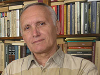

ЗОЛОТУХИН АНАТОЛИЙ ИВАНОВИЧ

(род. в 1939 г., в г. Днепропетровске). Инженер, краевед, эколог, литературовед, основатель и председатель Пушкинского клуба. В 1962 г. закончил Николаевский Кораблестроительный Институт, работал Главным специалистом в ЦНИиПИ «Тайфун», в настоящее время пенсионер. Автор около 50 научных работ по акустике и турбулентности, 26 изобретений, 15 книг и более 250 эссе и статей. Инициатор установки мемориальных досок и памятника А.С. Пушкину, а также В.И. Далю, Г.Н. Ге и акад. В.М. Бузнику.
{kind=link}
Статья размещена также на сайте:http://www.cnw.mk.ua/pushkin/rus/az.htm
{kind=link}
1. Взрывное развитие информационных технологий привело к созданию в 1975 г. Биллом Гейтсом и Поллом Алленом компании Microsoft, специализирующуюся на разработке программного обеспечения для ЭВМ и в августе 1981 г. был создан персональный компьютер IBM 5150, а через 2 года компьютер IBM PC стал стандартом персонального компьютера, которым пользуется значительная часть всех производимых в мире компьютеров. В 1963 г. в Вашингтоне руководителем компьютерной лаборатории Джоном Ликлидером была разработана концепция компьютерной сети, а в в 1967 г. заработала первая компьютерная сеть ARPANET, к которой были подключены научные центры в разных городах США. В 1974 году открыта первая коммерческая версия ARPANET — сеть Telenet. В 1976 г. сотрудник компании Xerox создает первую локальную компьютерную сеть – Ethernet, а уже в 1977 г. число хостов (предоставление ресурсов оборудования, подключенного связи для размещения и функционирования веб-сайта клиентов) достигло 100. В 1984 г. число хостов превышало уже 1000, в 1989 г. число хостов превысило 10000.
В конце 1980-х в результате прорыва в области технологий персональных компьютеров и средств связи между ними (модемов) интернет перестал быть инструментом исключительно военных и научных кругов и перешел в общественное пользование. Но даже в начале 1990-х о существовании интернета знали немногие. Только в декабре 1995 года глава Microsoft Билл Гейтс наконец объявил, что его компания намерена серьезно изменить приоритеты в пользу развития сетевых коммуникаций. С тех пор распространение интернета стало феноменальным. Приводить число компьютеров, подключенных к Сети, даже не имеет смысла, поскольку это число растет сумасшедшими темпами. То число, которое могло быть более или менее точным на момент написания, будет безнадежно устаревшим на момент прочтения. Для иллюстрации все-таки приведем темпы этого роста: в 1993 г. число хостов превысило 2 млн. и в Сети действовало 600 сайтов, в 1996 г. в мире существовало уже 12,8 млн. хостов и 500.000 сайтов, а в 2002 г. сеть Интернет связывает уже 689 млн. человек и 172 млн. хоста. В 1991 год. Европейская физическая лаборатория CERN создала известный всем протокол — www — World Wide Web. Эта разработка была сделана, прежде всего, для обмена информацией среди физиков, а затем стала общедоступной. Появляются первые компьютерные вирусы, распространяемые через Интернет.
В 1980 году писатель и политический аналитик Алвин Тоффлер (Alvin Toffler) опубликовал книгу «Третья Волна» (The Third Wave), в ней он описал постиндустриальный мир, в котором «первую скрипку» играют информационные технологии. Тоффлер, в частности, сумел оценить перспективы развития компьютерных сетей и сделал предположение, что однажды, такая сеть сможет объединить весь мир, наподобие того, как все обладатели телевизоров могут смотреть одну и ту же передачу. При этом, компьютерная сеть, по прогнозу Тоффлера, даст людям несравненно больше возможностей, чем обычное ТВ.
Информация взята из сайта: http://chernykh.net/content/view/512/708/
2. Выше приведена нами краткая история развития ЭВМ и Интернета для того, чтобы подчеркнуть тот момент, что сайт Николаевского Пушкинского клуба был создан на первой волне развития Интернета в Украине. В 1998 году при поддержке директора ДП «Фарлеп» Ганичева Сергея Николаевича, в Интернете на сайте http://www.cnw.mk.ua была создана страница «Пушкинского клуба». Жизнь странички синхронизирована с жизнью клуба. Каждый сезон начинается с публикации программы клуба на год. Самым главным стал новостийный раздел, в котором в течении сезона, публикуются анонсы, а затем отчеты и фоторепортажи не только клубных, но и общегородских событий.
В 2000 году веб дизайнером Андреем Сушко была изменена входная страница и добавлены разделы на украинском и английском языках. Динамически растет и развивается раздел посвященный публикациям клуба. Для удобства он разбит на два подраздела «Статьи» и «Книги». Несмотря на то, что статьи являются перепечатками из газет и журналов, они отличаются от своих бумажных собратьев. В первую очередь интернет дает возможность, во-первых, публиковать авторский вариант статей, которые часто сокращаются редакторами газет по своему усмотрению, во-вторых, есть возможность размещать цветные фотографии и изображения, а, в-тетьих, при этом нет ограничений на объёмом публикаций. Сейчас в подразделе «Статьи» около 70 публикаций. В подразделе «Книги» собраны очерки о 21 опубликованных книгах, дающие общее представление об их содержании. Обязательно в очерк включена обложка книги, чтобы легче было узнать на магазинных полках.
В 2010 г. был обновлен дизайн сайта, введен раздел Фотогалереи, в котором представлены фото старинных домов города и фотопортреты известных в нашем городе деятелей культуры и активных членов клуба, который ведет Игорь Горбатенко. За 22 года работы Пушкинского клуба в его работе приняли участие самые известные в г. Николаеве личности, многих из которых уже нет в живых, но архивы Интернет странички клуба хранят память о них до сего времени. Начиная с 21-го сезона работы клуба, подача новостей о работе клуба стала вестись не по годам, как это было до этого, а по сезонам. Работа клуба начинается в сентябре и заканчивается в июне следующего года – днем рождения Пушкина. Для того, чтобы не разбивать по годам информацию о работе клуба, и было принято решение давать сведения не по годам, а по сезонам, что создает цельное представление, подчиненное сезонной программе работы клуба.
В связи с возможностью размещения на сайте YouTube видеофильмов, начиная с 22-го сезона в сентябре 2010 г. началось размещение видеофильмов о работе клуба. Причем, первый опыт такого размещения выступлений отдельно по каждому исполнителю привел к тому, что через полгода мы уже с трудом смогли отыскать на сайте YouTube видео отдельных лиц. В связи с этим было принято решение подавать видео по заседаниям клуба, ключевым определителем в поиске которого становится дата заседания клуба, тема вечера легко может быть определена в вывешенной на сайте программе работы клуба. Необходимо отметить, что с внедрением видео посещаемость сайта клуба заметно выросла. К тому же мы сознательно пошли на внедрение видео, ибо оно способно помочь продвижению всех членов клуба и особенно молодых талантов. Любой молодой исполнитель может заинтересовать будущих искателей талантов в любом конце земного шара, сославшись на сайт своего вступления, размещенного на сайте клуба.
3. В 2010 г. на сайте клуба был впервые размещен раздел «Пушкинские сайты». Казалось бы в этом не было прямой необходимости – ибо все это и так можно найти в известных поисковых системах. Но, во-первых, на это нужно затратить немало времени, а, во-вторых, не так просто можно отыскать эти сайты, ибо некоторые учреждения входят в состав других, более мощных, например, музейных объединений России. Кроме того, здесь дана ориентация на то главное, что можно найти в тех или иных пушкинских учреждениях. Наконец, всем исследователям жизни и творчества Пушкина, легко сразу и без поиска можно найти текст любого произведения Пушкина из его полного собрания сочинений, достаточно обратиться к сайту: http://www.pushkin.niv.ru/. А, найдя необходимое произведение или письмо к нему или от него, сразу скопировать и включить в свою статью, посвященную поэту. Как видим преимущества Интернета налицо и он может существенно сократить затраты времени на всю творческую работу. На сайтах пушкинских музеев в России и Украине можно узнать режимы их работы и электронные адреса, с помощью которых можно выяснить все необходимые вопросы. Особенно это актуально для тех пушкинистов, которые работают с рукописями поэта, которые сосредоточены в Институте русской литературы (Пушкинский Дом) Российской Академии наук в Петербурге, сведения о работе которого можно найти на сайте: http://www.pushkinskijdom.ru/. Особый интерес для нашего Пушкинского клуба имеют связи с аналогичными организациями в других странах. К великому сожалению, нам не удалось отыскать в России подобных нашему клубу, которые бы также системно работали, без перерыва, на протяжении 22 лет да еще и с использованием открытого и регулярного выхода в Интеренет на протяжении последних 13 лет. Нет, конечно, традиционные (без освещения работы в Интернете) клубы имеются в Петербурге, студенческий в Саратове, на Ставрополье и еще несколько небольших организаций в Сибири, но они не являются открытыми. Недавно нам удалось выйти на лондонский Пушкинский клуб и предать им свои книги по исследованию жизни и творчества Пушкина. Клуб работает в Лондонском Пушкинском доме, являющегося российским культурным центром: http://www.pushkinhouse.org/.
4. Здесь мы представляем свою первую попытку по созданию Netoальманаха, выставленного для открытого доступа на нашем сайте. Идея его создания к нам пришла, во-первых, в силу того, что у нашего клуба нет спонсора для печатного издания второго альманаха, и мы, фактически, всю работу в клубе выполняем на общественных началах, единственным движущим мотивом которой является любовь к гению Пушкина и нашему родному городу. Но, обратившись к идее создания электронного альманаха, мы, во-вторых, с удовлетворением обнаружили, что в нем мы можем представить работу нашего клуба гораздо обширнее и объемнее, чем в печатном издании. Стоимость печатного издания заметно увеличивается с размещением в нем цветных фото, которых у нас скопилось огромное количество. Размещение в интернете цветных фото не является проблемой, более того, чернобелые фото выглядят здесь моветоном. И, в-третьих, мы в Netoальманахе можем разместить видеофильмы о каждом заседании, снимаемые нами, начиная с 2010 г. И, наконец, самое главное состоит в том, что такой альманах доступен для просмотра в любом конце земного шара. К тому же, этот альбом можно записать на лазерный диск и просматривать его на компьютерах, которые не имеют доступа к Интернету.
Конечно, может возникнуть вопрос: зачем, собственно, делать Netoальманах, если имеется сайт. Но, во-первых, если регулярно, скажем раз в год, собирать главное, что было создано членами клуба в Netoальманахе, то получится вполне законченный отчет о работе клуба за год. Во-вторых, в настоящее время сайт клуба в основном освещает творческую работу председателя Пушкинского клуба, а работа членов клуба остается в тени и не высвечивается в полной мере. Основных проблем для этого немало. Многие члены клуба не имеют не только доступа к Интернету, но и не имеют компьютеров. А готовить за всех информацию один председатель клуба не имеет возможности и делает это в исключительных случаях. Одна из главных проблем состоит также и в малом объеме, отведенного провайдером хостинга для Пушкинского клуба. А за 13 лет работы клубного сайта при наличии архивных файлов, скапливается немалый объем информации, львиную долю которого занимают цветные фото. Сама по себе базовая структура Netoальманаха такова, что в нем представлены только фото авторов, а основной текстовый объем не слишком загружает хостинг, что касается фотоальбома и видеофильмов, то их можно хранить соответственно на хостингах сайтов: www.picasaweb.google.com и www.youtube.com.
5. В заключение заметим, что в целом работа Пушкинского клуба в сети Интернет является своеобразной моделью и прообразом будущих ячеек Ноосферного нетократического сообщества недалекого будущего. Начало учению о Ноосфере, как известно положил акад. В.И. Вернадский в 1919 г. Вне вского сомнения третье тысячелетие станет переходным этапом в развитии нашей цивилизации от Биосферной фазы к Ноосферной, когда влияние разума человечества обретет планетарные масштабы. В негативном плане наше развитие уже решило эту задачу – созданным термоядерным оружием мы можем уничтожить человечество 30 раз! И, если даже этого не случится, то экспоненциальное увеличение народонаселения нашей планеты наряду с быстрым исчерпанием энергоресурсов, необходимым образом заставит человечество вначале разоружится, а затем провести разгосударствление и постепенно перейти к сообществу локальных общин, управляемых глобальным советом Земли. А вот это управление будет совершенно невозможно без использования глобальной сети Интернет, охватывающей все континенты нашей планеты (см. книгу А. Золотухина «Homo-Stellaris»). В книге А. Барда и Я. Зодерквиста «Нетократия. Новая правящая элита и жизнь после капитализма» высказан прогноз, что netoкратия прийдет на смену капиталистической демократии. Вместо демократии, при которой большинство навязывает свою точку зрения меньшинству, благодаря всеохватывающей сети будут созданы условия для построения плюрократического общества, в котором каждый принимает решение за себя, но не имеет права принимать решение за других. Это создаст условия для новой элиты – нетократии, которая будет управлять Землей, под постоянным, неусыпным и, главное динамичным (в смысле немедленной смены избранных нетократов), контролем остального общества через глобальную иерархическую сеть. Авторы ошибочно считают, что в глобальной сети отпадет необходимость в разного рода религиях, и это является гарантией от установления тоталитарного режима управления. Глубоко ошибочным является и мнение о том, что «Каждый, кто продолжает «верить в себя», есть, по определению, беспомощный неудачник в обществе, в котором правят нетократы. Участие в важнейших сетях не оставляет ни времени, ни возможности прислушиваться к самому себе. Членство в сетях, контур обратной связи и общественный разум – вот основа основ нетократии». Понятно, что эти ошибочные заключения связаны с обычным обожествлением нового. На основе новой филосфии динамического дуализма в книге «Homo-Stellaris» показано, что без веры и совести, на одном разуме человечество не сможет выжить. Разум и совесть (вера) – это те ограничители развития, это две стены коридора, между которыми должно двигаться человечество, чтобы амплитуда колебания между ними не достигла разрушительной величины. Творческий человек, как высшая ценность, в нетократическом обществе становится независимым от власти и от народа. И в этом смысле Пушкина можно считать первым нетократом, в сонете «Поэту» в 1830 г. он писал:
«Поэт! не дорожи любовию народной.
Восторженных похвал пройдет минутный шум;
Услышишь суд глупца и смех толпы холодной:
Но ты останься тверд, спокоен и угрюм.
Ты царь: живи один. Дорогою свободной
Иди, куда влечет тебя свободный ум,
Усовершенствуя плоды любимых дум,
Не требуя наград за подвиг благородный.
Они в самом тебе. Ты сам свой высший суд;
Всех строже оценить умеешь ты свой труд.
Ты им доволен ли, взыскательный художник?
Доволен? Так пускай толпа его бранит
И плюет на алтарь, где твой огонь горит,
И в детской резвости колеблет твой треножник.»
В своей книге упомянутые выше авторы довольно точно пишут: «Интернет – это что-то совершенно новое. Средство, благодаря которому практически любой человек после относительно небольших инвестиций в оборудование и при помощи нескольких простых действий может стать одновременно и создателем, и потребителем текста, образов и звуков. Трудно себе представить что-либо более могущественное. В Сети мы все и авторы, и издатели, и продюсеры. Наша свобода самовыражения колоссальна, а аудитория необозримо велика. Простым нажатием кнопки любая информация становится немедленно доступной. Масштабы развития этого средства коммуникации не имеют себе равных». И еще: «Настоящий нетократ – эпикуреец-эгоист. Умение работать в Сети – общественной или электронной – ему нужно только для того, чтобы контролировать утечку знания. А иногда нетократы развлекаются изданием книг о самих себе». Будем считать, что и мы как прямые последователи Пушкина, как нетократы-эпикурийцы и эгоисты, решили издать книгу о самих себе – первый Netoальманах Николаевского Пушкинского клуба…
{kind=link}